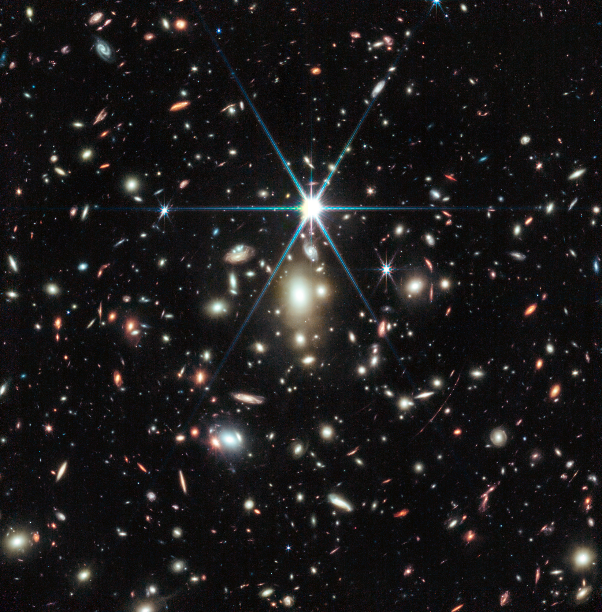
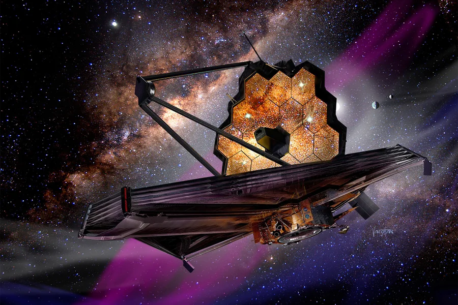

News
Press releases, media coverage, public announcements, and major milestones from the VENUS program.
-
2026-01-07
Press Conference at AAS 247: VENUS is Opening a New Window on Cosmic Expansion

We have discovered two extremely rare strongly lensed supernovae, SN Ares and SN Athena, whose multiple images will appear years to decades apart. These events provide a unique, long-baseline experiment to probe the expansion history of the Universe and address the long-standing tension in measurements of the Hubble Constant.
Press release (TBD) Media coverage (TBD) --> -
2026-01-05
VENUS at AAS 247: Postcard release

VENUS 2026 postcard distributed at AAS 247.
-
2025-07-08
Observation milestone: first target cluster observed

A massive galaxy cluster, WHLJ013719-08284, has been successfully observed as the first VENUS target cluster.
-
2025-03-11
VENUS program approved in Cycle 4

VENUS was approved as a multi-epoch Large Treasury program (Program ID 6882), with a total time allocation of 301.2 hours (252.2 hours in Cycle 4 and 49.0 hours in Cycle 5), making it one of the largest JWST programs ever approved.